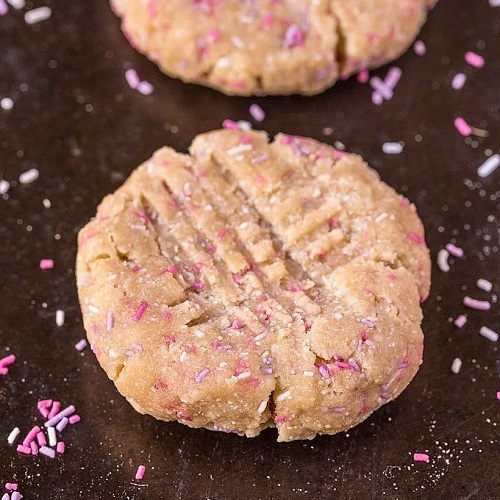

Vanilla Breakfast Cookies

Information
- TOTAL TIME: 0:10 PREP TIME: 0:10 COOK TIME: 0 SERVINGS: 1
| INGREDIENTS | QUANTITY |
|---|---|
| (Gluten free) Oat bran | 1/4 cup |
| (Gluten free) Oat flour | 1/4 cup |
| Vanilla flavoured protein powder* | 1 Scoop |
| Peanut butter | 2 tablespoons |
| Salt | pinch |
| Vanilla | 1/4 teaspoon |
| Milk | 1/4-1/2 cup |
| Sprinkles! | lots! |
Directions
- Line a large plate with baking paper and set aside.
- In a large mixing bowl, combine the oat bran, oat flour, protein powder, sea salt and mix well. Add the nut butter of choice and mix through until the batter is very crumbly.
- Add the vanilla extract/essence and using a tablespoon, add the milk of choice until a very thick batter is formed.
- Stir through sprinkles and form into three to four large balls and place on the lined plate. Press firmly into a cookie shape and top with extra sprinkles.
- Eat immediately or for a firmer cookie (and ones which can be portable and left at room temperature), refrigerate or freeze for at least 30 minutes.
Notes
- * If you use an unflavoured protein powder, up the vanilla essence to 1/2 teaspoon and ensure you add the sweetener of choice